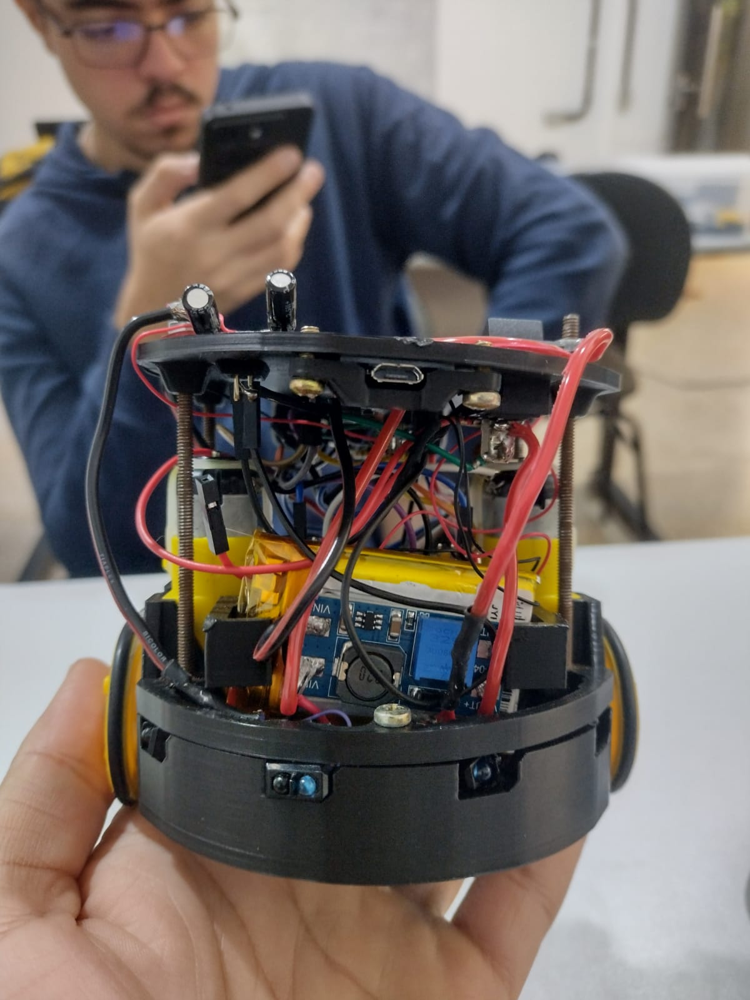

Sobre o ATTABOT
O Attabot 2.1 Mini é, em sua essência, um robô didático seguidor de linha desenvolvido para atuar como uma plataforma de integração multidisciplinar para os discentes de Engenharia Mecatrônica da Universidade Federal de Uberlândia (UFU). Muito mais do que um simples projeto de montagem, ele foi concebido para materializar os princípios de projeto de sistemas, conforme descritos por teóricos como Morris Asimow. Seu propósito central é exigir do estudante a mobilização prática de conhecimentos teóricos para a resolução de problemas reais envolvendo hardware, eletrônica e mecânica

Para compreender a verdadeira complexidade do Attabot e como ele reflete a nossa grade curricular, é necessário observá-lo através de seus quatro subsistemas integrados:
Outros cursos oferecidos pelo IFTM
- Estrutura Mecânica e Base Física
- Subsistema de Percepção
- Processamento e Condicionamento (O "Cérebro")
- Subsistema de Tração e Gestão de Energia
Em suma, o Attabot não é apenas um veículo autônomo; ele é um ecossistema mecatrônico completo. Ele serve como o laboratório prático definitivo para que nós, estudantes, possamos desenvolver a visão sistêmica e a capacidade de troubleshooting que serão diariamente exigidas de nós no mercado de trabalho de automação e robótica.
Conheça mais sobre o Attabot.
Os princípios educacionais que estruturam os trabalhos didáticos e pedagógicos do IFTM estão intimamente relacionados aos propósitos nos quais se fundamentam a criação dos Institutos Federais de Educação, Ciência e Tecnologia, ou seja, o de promover o ensino, a pesquisa e a extensão a partir de temas e problemas relacionados à educação tecnológica, ao trabalho, à ciência e a formação técnica e profissional do indivíduo que atuará no mundo do trabalho. Em sintonia com essa finalidade e reconhecendo o papel do IFTM Campus Uberlândia Centro como agente do desenvolvimento econômico local e regional, é que se oferta o curso Técnico em Desenvolvimento de Sistemas integrado ao ensino médio no município de Uberlândia.
Metodologia
A montagem do Attabot foi realizada seguindo uma sequência cronológica e modular, baseada no guia prático de laboratório e em periódicas reuniões de alinhamento do cronograma e planejamento da equipe. Dessa forma, foi possível desenvolver a montagem do Attabot de maneira mais organizada.
Resumo Executivo dos Subsistemas
| Mecânica | Percepção | Processamento | Tração e Energia |
|---|---|---|---|
Chassi e suportes projetados sob rigorosas tolerâncias para garantir estabilidade contra esforços dinâmicos. Continue lendoEste subsistema funciona como o esqueleto que sustenta todo o projeto. Ele é composto pelo chassi principal, barras roscadas que exigiram dimensionamento prático da equipe (corte e desbaste), e suportes fabricados via impressão 3D. A importância desta base reside na necessidade de garantir estabilidade física e respeitar tolerâncias dimensionais precisas. Sem essa rigidez estrutural, o robô seria incapaz de suportar as vibrações e os esforços dinâmicos gerados durante a movimentação, o que comprometeria a leitura dos sensores e a integridade dos componentes embarcados. |
Matriz sensorial para leitura do ambiente, unindo rastreamento óptico de linha, odometria e dados inerciais. Continue lendoPara que o robô interaja de forma autônoma, ele precisa mapear o ambiente físico ao seu redor através de uma complexa matriz de sensores. O grande destaque é o conjunto de oito sensores ópticos infravermelhos (TCRT5000), dispostos estrategicamente para formar as "patas da aranha", responsáveis pela leitura contínua e rastreamento da linha no solo. Além da visão de solo, o Attabot integra sensores avançados de navegação espacial: o módulo inercial MPU6050 (que combina giroscópio e acelerômetro para ler a estabilidade do chassi), o sensor a laser ToF VL53L0X para medição precisa de distância, e os sensores de velocidade LM393, que fazem a leitura dos discos de encoder acoplados às rodas para calcular o deslocamento (odometria). |
Microcontrolador ESP32 atuando como central de inteligência, condicionando sinais e gerenciando a lógica de controle. Continue lendoTodos os estímulos físicos captados pela matriz sensorial — luz, inércia, rotação e distância — precisam ser convertidos em grandezas elétricas interpretáveis. Essa organização inicial é feita por componentes de condicionamento, como o Multiplexador Analógico CD4052, que roteia os múltiplos sinais. O gerenciamento inteligente de todo esse fluxo de dados é centralizado no microcontrolador ESP32. Atuando como a unidade de processamento principal (o cérebro), o ESP32 é o responsável por executar os algoritmos de controle, tomar decisões em frações de segundo e gerenciar protocolos complexos de comunicação, como o Barramento I²C, integrando perfeitamente hardware e software. |
Acionamento preciso de motores DC aliado a um rigoroso controle elétrico e regulação de tensão. Continue lendoA capacidade de converter decisões lógicas em movimento físico ocorre neste subsistema. O deslocamento do Attabot é garantido por motores DC acoplados às rodas, que recebem comandos diretos de velocidade e sentido de rotação através de um driver de potência (Mini Ponte H). Contudo, para que a tração e o processamento funcionem sem falhas, é imperativo um sistema de gestão de energia robusto. A alimentação de todo esse ecossistema é rigorosamente calibrada para evitar quedas de tensão ou ruídos elétricos, utilizando um módulo de carga de baterias (TP4056), conversores do tipo Boost (MT3608) para elevar a tensão quando necessário, e reguladores lineares (como o AMS1117) para fornecer energia limpa e constante aos componentes sensíveis. |
| Conheça [+] (Voltar ao Topo) | Conheça [+] (Voltar ao Topo) | Conheça [+] (Voltar ao Topo) | Conheça [+] (Voltar ao Topo) |
Resultados encontrados.
Até a presente data, o projeto encontra-se em um estado avançado de integração. O chassi mecânico está consolidado, com motores e discos de encoder alinhados e adaptados. O subsistema de percepção ("Aranha") foi totalmente soldado e suas falhas de ruído foram corrigidas pela equipe com a adição de capacitores. O principal desafio atual detectado pela equipe refere-se à distribuição de energia (barramento 3,3V) na ESP32, visto que os diagramas não apresentavam a clareza necessária, gerando uma queda de produtividade no final do dia 30/06. Contudo, devido à estratégia de "margem de segurança" no planejamento do cronograma, esse entrave não compromete o prazo de entrega.